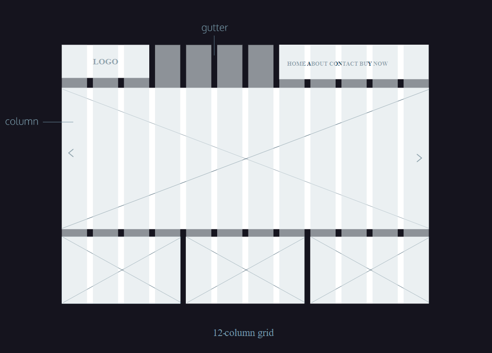

Flexbox (CSS)
Grid Anatomy
When designing a website, the grid comprises three major components: columns, gutters, and margins.
Columns: are defined as the vertical sections that span the width of a page. In web design, it's common to see layouts consisting of 12 or 16 columns, while other may only feature three columns. Defining the number of columns depends on what's appropriate for your design, device, and or screen viewing size.
Next, a gutter is the negative space between each column. Gutters help in ensuring the columns don't run together, which would negate the purpose of using a column-based grid. Gutters make up the negative space between columns. This design element helps to provide a natural break between elements aligned horizontally, while also helping to break rows of content vertically.
Margins appear on the left and right sides of the column-based grid. These ensure the content of your designs doesn't match up to the edges of the browser window.
Grid Rows: are the horizontal lines on a grid. Think of rows as invisible boxes that groups content together by height. Rows are commonly used in web designs to group content together and re-order other content to allow for more whitespace.
Responsive Grid
When designing web content, a designer needs to take into account the different screen-sizes a user might encounter and how that will affect a website's layout. Many websites utilize responsive design, a set of techniques that allow a website's content to shift based on the device or screen size. Because of these changes, responsive design requires a different number of total columns based on screen size, in order to accommodate content and keep it from being squished.
Consider your mobile, tablet and desktop devices. Now think about their viewable areas. All are substantially different in size. Thus, it's common practice in web design to create responsive grid sizes. On a large or desktop device you may start with a 12 column grid, but on a small or mobile device, you adjust the 12 column grid to a 4 column grid.
As a designer, responsive grid design enables you to maximize the content on the screen, ensuring a more accessible experience for users. Additionally, your design elements will have sufficient space to breathe and content can naturally flow across the page.
Flexbox Container Properties
| Property | Example Code | Notes |
|---|---|---|
| display: flex | For an element to become a flex container, its display property must be set to flex. div.container { display: flex; } |
Any element can be a flex container. Flex containers are helpful tools for creating websites that respond to changes in screen sizes. Child elements of flex containers will change size and location in response to the size and position of their parent container. |
| display: inline-flex | Multiple flex containers to display inline with each other: div.container { display: inline-flex; } |
If we didn't want div elements to be block-level elements, we would use display: inline. Flexbox, however, provides the inline-flex value for the display property, which allows us to create flex containers that are also inline elements. |
| justify-content | .container { display: flex; justify-content: flex-end; } HTML: <div class='container' id='flexstart'> <div class='box'></div> <div class='box'></div> <div class='box'></div> </div> |
By default, all of the child elements (flex items) moved toward the upper left corner of the parent container. To specify how flex items spread out from left to right along the main axis, we most commonly use 5 main properties below. Visual Example - flex-start: starting from the left of the parent container, with no extra space between or before. - flex-end: the last item starting on the right side of the parent container, with no extra space between or after. - center: centered in the parent container with no extra space before, between, or after. - space-around: equal space before and after each item, resulting in double the space between elements. - space-between: equal space between, but no extra space before the first or after the last elements. |
| align-items | .container { align-items: baseline; } Note: using min/max height/width will ensure element is at least/most a certain size. |
Used to align space flex items vertically along the cross axis of the parent container. Below are five commonly used values for the align-items property: Visual Example - flex-start: all elements will be positioned at the top of the parent container. - flex-end: all elements will be positioned at the bottom of the parent container. - center: the center of all elements will be positioned halfway between the top and bottom of the parent container. - baseline: the bottom of the content of all items will be aligned with each other. - stretch: if possible, the items will stretch from top to bottom of the container (this is the default value; elements with a specified height will not stretch; elements with a minimum height or no height specified will stretch). |
| flex-grow | .container { display: flex; } .side { width: 100px; flex-grow: 1; } .center { width: 100px; flex-grow: 2; } |
If the parent container is larger than necessary, then the flex items will not stretch by default. The flex-grow property allows us to specify if items should grow to fill a container and also which items should grow proportionally more or less than others. This property is declared directly on the flex items and not the container itself (in ratio/proportion form). Flex items do not grow unless the flex-grow property is declared because the default value is 0. Visual Example |
| flex-shrink | In exmaple below, the .center div will shrink twice as much as the .side divs if the .container div is too small to fit the elements within it: .container { display: flex; } .side { width: 100px; flex-shrink: 1; } .center { width: 100px; flex-shrink: 2; } |
Just as the flex-grow property proportionally stretches flex items, the flex-shrink property can be used to specify which elements will shrink and in what proportions. The default value of flex-shrink is 1, which is why items shrink automatically if not declared otherwise. Keep in mind, minimum and maximum widths will take precedence over flex-grow and flex-shrink. As with flex-grow, flex-shrink will only be employed if the parent container is too small or the browser is adjusted. Visual Example |
| flex-basis | In the example below, the .side divs will be 100 pixels wide and the .center div will be 150 pixels wide if the .container div has just the right amount of space: .container { display: flex; } .side { flex-grow: 1; flex-basis: 100px; } .center { flex-grow: 2; flex-basis: 150px; } |
In the previous two properties, the dimensions of the divs were determined by heights and widths set with CSS. Another way of specifying the width of a flex item is with the flex-basis property. It allows us to specify the width of an item before it stretches or shrinks. We can think of flex-basis as the width OR height (depending on flex-direction) of our flex items before they are constrained by a flex container. Visual Example of minimize versus full screen Also, a few notes about using flex-basis and width/height: - flex-basis is limited by both max-width/max-height and min-width/min-height - When declared, flex-basis will override the width/height property set on a flex container - If no flex-basis is specified the default is the set width/height value, if width/height isn't specified the default is the width/height of the content - When there is not enough space for our flex items our items will shrink at an even rate to fit within the container by default - If there is too much space we can declare flex-grow: 1; on our flex items to make them grow at an even rate |
| flex | .big { flex: 2 1 150px; } .small { flex: 1 2 100px; } |
The shorthand flex property provides a convenient way for specifying how elements stretch and shrink, while simplifying the CSS required. The flex property allows you to declare flex-grow, flex-shrink, and flex-basis all in one line. You can also declare flex-grow and flex-basis. Note that there is no way to set only flex-shrink and flex-basis using 2 values. |
| flex-wrap | In the example below, three flex items are contained by a parent flex container. The flex container is only 250 pixels wide so the three 100 pixel wide flex items cannot fit inline. The flex-wrap: wrap; setting causes the third, overflowing item to appear on a new line, below the other two items: .container { display: inline-flex; flex-wrap: wrap; width: 250px; } .item { width: 100px; height: 100px; } |
Sometimes, we don't want our content to shrink to fit its container. Instead, we might want flex items to move to the next line when necessary. This can be declared with the flex-wrap property on flex containers. The flex-wrap property can accept three values: Visual Example when minimized - wrap — child elements of a flex container that don't fit into a row will move down to the next line - wrap-reverse — the same functionality as wrap, but the order of rows within a flex container is reversed (for example, in a 2-row flexbox, the first row from a wrap container will become the second in wrap-reverse and the second row from the wrap container will become the first in wrap-reverse) - nowrap — prevents items from wrapping; this is the default value and is only necessary to override a wrap value set by a different CSS rule. |
| align-content | In the example below, there are four flex items inside of a flex container. The two rows of divs will be evenly spaced from top to bottom of the parent container with equal space before the first row and after the second (space-around), with double space between the rows. .container { display: flex; width: 400px; height: 400px; flex-wrap: wrap; align-content: space-around; } .child { width: 150px; height: 150px; } |
We used align-items for aligning elements within a single row. If a flex container has multiple rows of content, we can use align-content to space the rows from top to bottom. Below are some of the more commonly used align-content values:Visual Example - flex-start: all rows of elements will be positioned at the top of the parent container with no extra space between. - flex-end: all rows of elements will be positioned at the bottom of the parent container with no extra space between. - center: all rows of elements will be positioned at the center of the parent element with no extra space between. - space-between: all rows of elements will be spaced evenly from the top to the bottom of the container with no space above the first or below the last. - space-around: all rows of elements will be spaced evenly from the top to the bottom of the container with the same amount of space at the top and bottom and between each element. - stretch: if a minimum height or no height is specified, the rows of elements will stretch to fill the parent container from top to bottom (default value). |